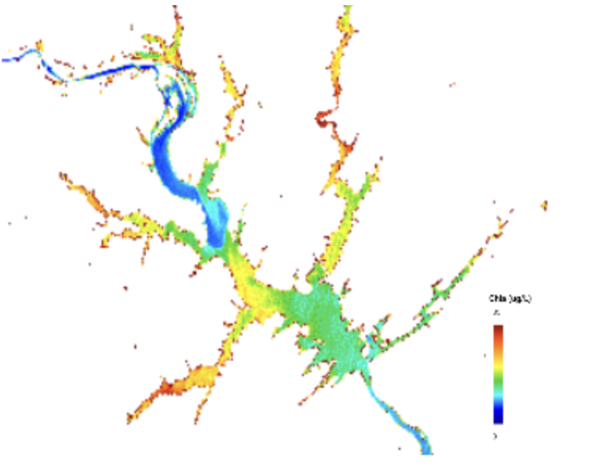

v1.4.0
Complete
feat(remote-sensing): coastal marsh land-cover classification
NASA Coastal Marsh Change Study

WFU Engineering — Di Vittorio Lab · Research Assistant
Context
A NASA-funded study needed a scalable way to track coastal marsh change over time across dozens of watersheds — too much ground-truth data to collect manually.
My role
Built automated multi-temporal land-cover classification workflows in Google Earth Engine, prepared and validated geospatial training data in ArcGIS Pro, and evaluated model accuracy in MATLAB. Mentored an undergraduate intern on the same methods.
Outcome
Delivered a calibrated, scalable prediction model validated across 57 watersheds, and presented the findings at the WFU Undergraduate Research Symposium.
Industry Context
Environmental and sustainability metrics are moving from research-only datasets into standard business reporting, which is raising demand for analysts who can work with geospatial and remote-sensing data at this level of rigor.
ToolsGoogle Earth Engine · ArcGIS Pro · MATLAB
ApproachManual ground-truth sampling → automated multi-temporal classification